Descent

 video: 111.wmv
video: 111.wmvThrough the path buried in cherry blossoms―
video: 111.wmvthrough the clearing―
 video: 111.wmv
video: 111.wmvthrough the forest―
 video: 111.wmv
video: 111.wmvWe went down underground.
And on, deeper and deeper―


"Huh? The mummy was here, though..."

"Did someone carry it off?"

―Through the narrow cave, we climbed a straight slope.
It's steep, but something like vines is strung over the ground and the walls, and we can climb holding on by hand.
Underfoot, too, the vines keep us from slipping, making the climb easier.
As if someone had worked on it so that we could climb even a little more easily.
It's steep, but something like vines is strung over the ground and the walls, and we can climb holding on by hand.
Underfoot, too, the vines keep us from slipping, making the climb easier.
As if someone had worked on it so that we could climb even a little more easily.

"Whoa... we're seriously climbing this...?"

"I'll go look first!"
Goto climbed here and reached the top.
Right now Goto must be terribly scared.
Wait for me, I'm coming.
Right now Goto must be terribly scared.
Wait for me, I'm coming.
10 minutes―
20 minutes―
30 minutes―
Up the steep slope―and up, and up―
"Heeey, Kanaaa! You there?"
"I'm here! I can see light!"
This steep climb up the slope, with nothing at all getting in our way.
"I'm here! I can see light!"
This steep climb up the slope, with nothing at all getting in our way.
This steep climb, too, will soon be over.
It's up ahead.
Shigatsu Youka―
no, the human who became Shigatsu Youka.
The girl who became Shigatsu Youka.
The moment we came out―
A wind strong enough to blow away all the fatigue up to now.
A mountain ringed by cherry trees and a moon so bright it hardly seemed like night.

The sound of running water, and steam rising thick.
The smell of sulfur.
Right nearby, boiling water seems to be welling up from underground.
The smell of sulfur.
Right nearby, boiling water seems to be welling up from underground.
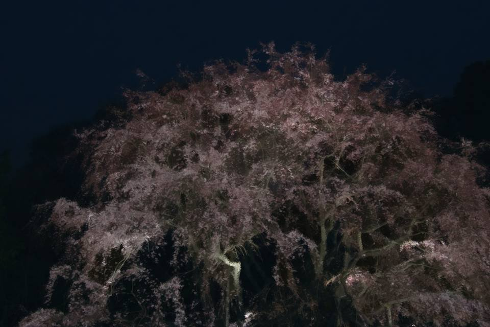

"Goto!"

"Sis...!"

"Eiichiro-san..."

"Senpai... I'm sorry...
I..."
Goto's thin voice.
Eyelids so swollen there's no telling how much she cried.
And a pale face.
Goto's thin voice.
Eyelids so swollen there's no telling how much she cried.
And a pale face.
"What on earth... what on earth did you do to Goto!?"
I raised my voice at Chiga-nee and Eiichiro Niimura.
For Goto to be this frightened... what on earth did they do to her?
What did Goto ever do...!
I raised my voice at Chiga-nee and Eiichiro Niimura.
For Goto to be this frightened... what on earth did they do to her?
What did Goto ever do...!
"Haha, Natsumi-chan, we meet again after so long, and that's quite a way to talk.
Before that, isn't there something you should say to me?"
"Huh?"
"I died trying to get the balloon you let go of, you know? Nothing to say?"
"That's..."
At that, Haruka put a hand on my shoulder.
"Huh?"
"I died trying to get the balloon you let go of, you know? Nothing to say?"
"That's..."
At that, Haruka put a hand on my shoulder.

"Natsumi, you don't need to listen to this crap."
"Oh, come on, even Haruka's cold to me.
Mifuyu-chan, you understand, don't you? The one who had it hardest when I died was you, right?"
I looked at Obasan:
I looked at Obasan:

head down, trembling.
Then she fixed Eiichiro Niimura with a hard glare.
Then she fixed Eiichiro Niimura with a hard glare.

"Who are you!? Eiichiro-san would never say such a thing!
He was kinder and warmer than anyone...
Be quiet! Impostor!"
"Oh ho ho, harsh. Well, people change in 12 years, you know? You were so beautiful back then too―getting old is a sad thing, isn't it?"
"Wh...!"
"Oh ho ho, harsh. Well, people change in 12 years, you know? You were so beautiful back then too―getting old is a sad thing, isn't it?"
"Wh...!"

"O-Obasan! Don't rise to the bait!"
Goto forced out a voice close to tears.
And then,
Goto forced out a voice close to tears.
And then,
Chiga-nee hoisted Goto up by the collar.
"Shut up, genius girl. It's a nuisance when you open your mouth."
"Gh-ghhh...!"
To my junior... what are you doing...!
Seeing Goto cry out in pain, my nerves have finally reached their limit.
"Gh-ghhh...!"
To my junior... what are you doing...!
Seeing Goto cry out in pain, my nerves have finally reached their limit.
Just then, a small figure dashed past right in front of me.

"Let go of Eri-nee!"
"Whoops."
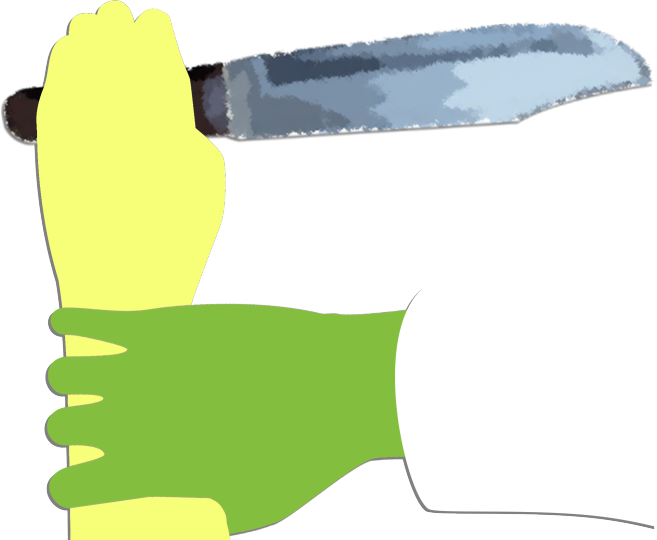
Flying at Chiga-nee as fast as a gust of wind, Kana-chan was plucked up lightly by Ojisan.
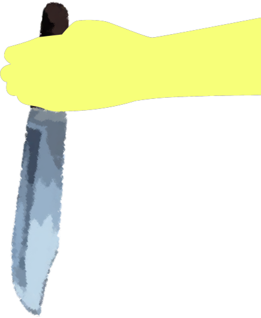
"L-let go!
Let go!"
Kana-chan drove the knife in her hand into Ojisan's arm.
Not once but twice, three times―
again and again she stabbed.
But Ojisan showed no sign of flinching at all.
"Nice to meet you, Kana-chan! It's your Uncle Eiichiro!
Playing with a toy like that―what a bad girl."
Just like that, he tossed Kana-chan high into the air.
About 7 meters high.
Child or not, no human could throw a person that high with one hand.
Child or not, no human could throw a person that high with one hand.
"Gh...!"
She seems to have landed somehow, but let out a pained cry.
She seems to have landed somehow, but let out a pained cry.
"Kana, you okay!?"

"I-I'm fine! I think I just twisted it a little...
Ow-ow-ow...!"
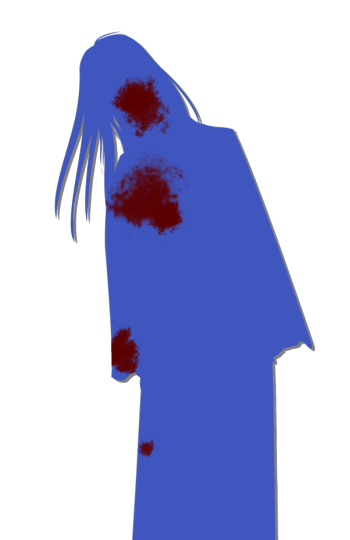
"Kana, twisting your foot over a little thing like that―you need more training, you know?"
Having set Goto down at some point, Chiga-nee sneers at Kana-chan.
Having set Goto down at some point, Chiga-nee sneers at Kana-chan.
"Well, the greetings are over, so let's get to the main subject."
"You did read what I left about the Goddess's true identity, properly, didn't you? Natsumi-chan hasn't read it directly, but she seems to have the gist, so that's no problem."
"You did read what I left about the Goddess's true identity, properly, didn't you? Natsumi-chan hasn't read it directly, but she seems to have the gist, so that's no problem."
"I'd have liked only Natsumi-chan to come here, to be honest.
Well, I suppose Goto-chan was needed as bait to lure Natsumi-chan.
The rest of you, since you're here, enjoy the show from the audience."
A light comment, like the opening remarks of a show.
It may be light to these two, but I can't forgive two people who put Goto through this.
Even if it's Shigatsu Youka's influence, I have no intention of warming to these two now.
It may be light to these two, but I can't forgive two people who put Goto through this.
Even if it's Shigatsu Youka's influence, I have no intention of warming to these two now.
"Then you're done with Goto, aren't you?
If it's me you want, give Goto back."
"Uncle, what do you say?"
"Hm... fine, I suppose. Goto-chan can check her deductions against the answers from the audience seats too."
Ojisan prodded the crouching Goto's back with his toe.
Obeying, Goto walked unsteadily toward us.
"Uncle, what do you say?"
"Hm... fine, I suppose. Goto-chan can check her deductions against the answers from the audience seats too."
Ojisan prodded the crouching Goto's back with his toe.
Obeying, Goto walked unsteadily toward us.
"Goto...!"
"Senpai, I'm sorry...! If I'd been careful, I wouldn't have ended up a hostage...!"
"Goto, don't worry about it. Wherever you'd run, it'd be the same. Either way, we were meant to end up here."
"Senpai, I'm sorry...! If I'd been careful, I wouldn't have ended up a hostage...!"
"Goto, don't worry about it. Wherever you'd run, it'd be the same. Either way, we were meant to end up here."
"Haruka, you meet your dad again after all this time and feel nothing?
All you've done is glare at me."

"Damn right, you impostor!
Like Mom says, the real Dad never said nasty, needling things like that!"
"Harsh... Then why not ask the genius girl over there? Whether I'm the real thing or an impostor."
"Harsh... Then why not ask the genius girl over there? Whether I'm the real thing or an impostor."

"N-Niimura-senpai..."
"Goto, so that guy really is..."
"The body alone is real. But the mind has been completely taken over by Shigatsu Youka."
"Goto, so that guy really is..."
"The body alone is real. But the mind has been completely taken over by Shigatsu Youka."

"Uncle, do we need that story right now? You're getting to the main subject, aren't you?"
"Ah, right, right, it slipped my mind. My brother―impersonating him has gotten into my bones."
"Ah, right, right, it slipped my mind. My brother―impersonating him has gotten into my bones."
"Daddy's...?"
"Hmm, so you really didn't notice! Well, same face, same voice."
"Hmm, so you really didn't notice! Well, same face, same voice."
"So the one who cut off Sakura-san's head was..."
"Of course, it was me. Doing that started the rumor of a curse, so that people dying every year is, in a sense, natural. We need a lot of corpses soon, you see. We have to make a lot of cherry trees bloom in this settlement too."
"Of course, it was me. Doing that started the rumor of a curse, so that people dying every year is, in a sense, natural. We need a lot of corpses soon, you see. We have to make a lot of cherry trees bloom in this settlement too."

"In the old days Droga was made now and then and used for the hunt.
In exchange, they became cherry trees.
The Verde mummy―
this settlement worshipped Verde until 70 years ago.
And so Droga users die in April and become cherry trees."
"That was the most stable cycle for the Goddess.
Cherry trees are born at regular intervals, and thanks to the legend of the Green-Eye Curse-Killing, third-generation children are killed as soon as they're born.
Women who marry in from outside are given high status and become mothers who aren't Droga users.
That way, the residents are first and second generation only."

"Normally third-generation corpses are needed for reproduction, but thanks to the Verde mummy, no new corpses are needed.
The third generation becomes able to produce the spores that control the first and second, but on the other hand its blood carries an enzyme that destroys the Goddess's cells directly.
It was necessary and dangerous at the same time."
"So the third generation is sent the order to kill those with precognition―
that is, those the Goddess's will can reach.
Then everyone thinks it's a cursed child and tries to kill it fast, right?
The Green-Eye Curse-Killing is a device for disposing of the third generation that threatens the Goddess.
The Goddess is still mid-evolution; making up for a weakness like this takes time."
"But something happened that broke that cycle.
A religious group called the Holy Cerejeira Church came and carried off most of the cherry trees here.
Someone had noticed, you see. Someone noticed that the cherry trees here are the kind that take over humans."
"The Grand Witch two generations back, Kikyo-san.
The one who's said to be the only one who didn't die in April."
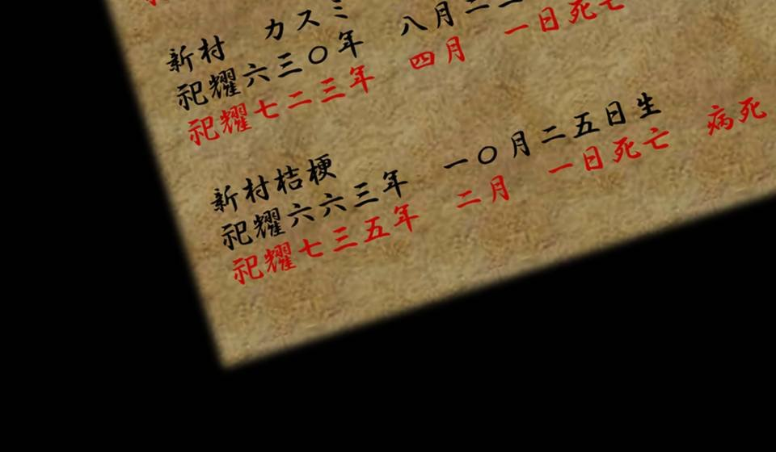
"She was a very wise woman, I hear.
Why people die in April,
why there is Droga,
why they worship Verde.
Kikyo noticed the possibility that the Goddess was taking over humans.
I'll grant that the Goddess is a threat to humans."
"Kikyo sealed Verde away and gave falsificaso to the residents.
And to clear away the cherry trees here, she had the Holy Cerejeira Church take them.
Even the Goddess never imagined the residents themselves would try to be rid of the cherry trees they'd relied on all along."
"About 120 years ago, a man named Akira Niimura, who later became Kikyo's husband, went to Tokyo City.
And there, I'm told, he presented Droga to those in power at the time.
That was how Kikyo came to be connected with this Arata settlement and married in.
The Goddess killed Kikyo's family and tried to sap her will."
"Well, she could have killed Kikyo, but if she became Grand Witch in a listless state, the settlement's people would be easier to control, so keeping her alive was more convenient.
But it was too late. The residents no longer used Droga, and the Holy Cerejeira Church came here.
What's more, they had ties to the Japanese government, and ample funds too."
"The Goddess agonized over it, I hear.
Whether to put the dead to work and resist the Holy Cerejeira Church.
But Goddess or not, she could hardly stand against a group with the state behind it.
All she could do was watch quietly as the cherry trees were carried off."
"Above all, the Goddess feared her true identity becoming public.
If Droga came into use worldwide, the Goddess's body would be used up and could only perish.
Tens of thousands of years spent growing, and the Goddess suffered because of humans' foolish ideas."
"The Goddess lost many cherry trees, couldn't grow, and had to start over from scratch.
For that, humans were now nothing but a nuisance.
The Goddess's body is greedily devoured by humans, and compared with them, animals without intelligence are far better suited to the Goddess's reproduction.
She decided to drive the humans out of the land of Arata."
"Then the real reason behind the wave of elderly suicides was..."

"It was to acquire the intelligence of modern humans as quickly as possible, and to warn that this is no place for humans to live.
Until now the Goddess had grown with humans as her main seedbed, but now humans were nothing but a threat.
The Goddess thought no human would want to live in a settlement where you kill yourself at 75."
"But the residents here were tougher than expected.
Until 10 years ago she kept them in check with the wave of suicides, but it didn't show much effect.
Driving out residents rooted here for hundreds of years isn't so easy, after all.
So she switched to the curse-killings, which stir up more fear."
"So you were killing the old people and making it look like suicide."
"Well, that's about it. But the Goddess is a kind one. Until 10 years ago she avoided laying hands on young people with a future as much as she could, and chose the old, who by age were only waiting for death. But now that there's no one over 75 left―"
"Well, that's about it. But the Goddess is a kind one. Until 10 years ago she avoided laying hands on young people with a future as much as she could, and chose the old, who by age were only waiting for death. But now that there's no one over 75 left―"
"You killed Sakura-san for that...!"
"Don't get the wrong idea. In the end, Sakura killing herself was Sakura's own will. A chance just happened to come around, that's all. Mifuyu-chan―if she hadn't gone and confessed the Droga business to Mom, none of this would have happened."
"Don't get the wrong idea. In the end, Sakura killing herself was Sakura's own will. A chance just happened to come around, that's all. Mifuyu-chan―if she hadn't gone and confessed the Droga business to Mom, none of this would have happened."
"Wh...!"
"Hahaha, just kidding. Either way, we meant to increase the corpses by every means there was. For instance,
"Hahaha, just kidding. Either way, we meant to increase the corpses by every means there was. For instance,
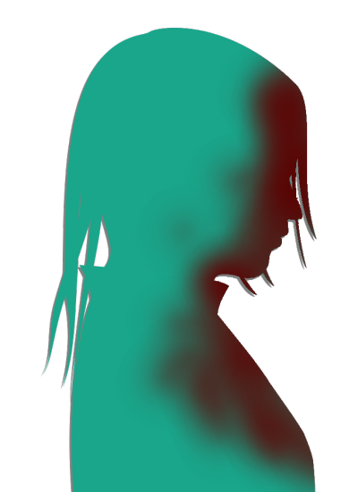
even a visitor coming from outside―
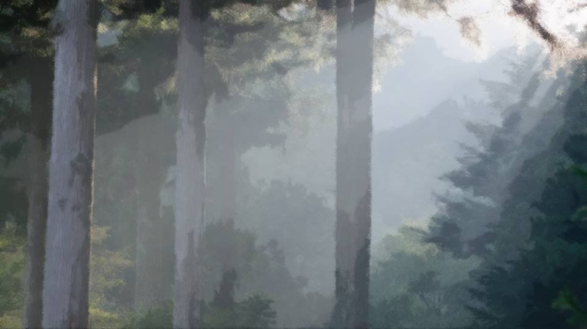
Haruka going into mountain seclusion―
there are any number of ways.
As needed, I swapped places with my brother and adjusted the information inside the settlement."
"What did you do to Daddy!?"
"I did nothing to my brother, and my brother did nothing. I just pretended to be him once in a while, when I saw the chance. Thanks to that, it seems he got suspected of being the curse-killer―a little hard on him, I suppose. Sakura dead, and then treated as the culprit himself."
"Gh...! Daddy's always cared about Mom and the settlement...! Give Mom back!"
"I did nothing to my brother, and my brother did nothing. I just pretended to be him once in a while, when I saw the chance. Thanks to that, it seems he got suspected of being the curse-killer―a little hard on him, I suppose. Sakura dead, and then treated as the culprit himself."
"Gh...! Daddy's always cared about Mom and the settlement...! Give Mom back!"
"Yes, here's Mom.

Hee hee hee, how brave she is, my daughter."
"Sakura-san..."
"It's been a little while, Haruka."
"So Sakura-san's already..."
"I did try to keep you in the settlement, but... You're as simple as ever, so it wasn't much trouble."
"It's been a little while, Haruka."
"So Sakura-san's already..."
"I did try to keep you in the settlement, but... You're as simple as ever, so it wasn't much trouble."
"Wh-what are you talking about...!"
"You remember what we talked about just now, don't you? I taught you what a Haruka who can do nothing should do to be useful, didn't I?"
"You tricked me...!?"
"Don't make strange accusations. I didn't tell a single lie. Oh, but that while Eiichiro's body was being repaired, the Goddess wouldn't notice―that was a lie. I'm sorry."
"You remember what we talked about just now, don't you? I taught you what a Haruka who can do nothing should do to be useful, didn't I?"
"You tricked me...!?"
"Don't make strange accusations. I didn't tell a single lie. Oh, but that while Eiichiro's body was being repaired, the Goddess wouldn't notice―that was a lie. I'm sorry."
"Hahaha, the Goddess isn't that much of a dud.
That's as easy as watching TV while you eat dinner.
That said, she can't keep watch all the time. Even the Goddess needs regular rest."
"Now, Eiichiro, that's enough preamble. Honestly, Eiichiro, you're bad at getting to the point. You were the same before you died."
"Now, Eiichiro, that's enough preamble. Honestly, Eiichiro, you're bad at getting to the point. You were the same before you died."
"Back then I was a wimp and just couldn't get it out. Now I've simply become talkative."
"Yes, yes, enough of that."
At that, Sakura-san reached a hand toward us.
"Yes, yes, enough of that."
At that, Sakura-san reached a hand toward us.
"Natsumi-chan, come here.
You come over here to us, and it's all over."
"Me...?"
"What are you saying! Like she'd just go trotting over because you said so!"
"Me...?"
"What are you saying! Like she'd just go trotting over because you said so!"
"'The shinigami are the familiars of the four divine messengers who serve Abaddon.
They appear from a volcano of sulfur.
What the Grand Witch must do―
is to keep Abaddon and the four divine messengers sealed away.'
That's the saying handed down to the Grand Witches."
"Calling the Goddess 'Abaddon'―such an awful way to put it."
"Well, thanks to that odd phrasing it lost all reality and became a mere legend, which suited us."
"Calling the Goddess 'Abaddon'―such an awful way to put it."
"Well, thanks to that odd phrasing it lost all reality and became a mere legend, which suited us."
"The first-generation dead, Eiichiro Niimura.
The second-generation dead, Sakura Niimura.
The first-generation living, Chigaya Niimura.
One more, a living one of the second generation, and these four 'divine messengers' are assembled."
"The living of each generation and those who died within 20 years― with the four of us as the last seedbed, the Goddess gains complete resistance to third-generation blood, and eternal rest comes to her. Deep among cherry trees no one can disturb, the Goddess will spend all eternity."
"The living of each generation and those who died within 20 years― with the four of us as the last seedbed, the Goddess gains complete resistance to third-generation blood, and eternal rest comes to her. Deep among cherry trees no one can disturb, the Goddess will spend all eternity."
"A few days before Sakura-san died, she had used falsificaso for Chiga-nee's sake, so she was no longer second generation.
The divine messengers should be incomplete."
"Nice. A sharp objection. But did Sakura really use the falsificaso on herself?"
"Nice. A sharp objection. But did Sakura really use the falsificaso on herself?"
"Natsumi-chan, you understand by now, don't you?
The second and third generations can be made to perceive visions and voices alike, at the Goddess's will.
I only believed I'd injected myself with falsificaso."
"My brother thought it was dangerous to use falsificaso on Sakura while its toxicity was unknown. So Sakura meant to inject the falsificaso without telling anyone, at the risk of her life. Somewhere no one could see her―
"My brother thought it was dangerous to use falsificaso on Sakura while its toxicity was unknown. So Sakura meant to inject the falsificaso without telling anyone, at the risk of her life. Somewhere no one could see her―

hiding in that dark, narrow hole."
"In the end, I only went into the hole.
Telling no one means there's no one to prove whether I really used the falsificaso on myself.
Hee hee hee, even Kotaro didn't notice this one, it seems."
"Sakura and Natsumi-chan knew their danger sense was useful to everyone.
So they lived as honestly as they could, so as not to become the boy who cried wolf, right?
That honesty backfired, is all."
"In the same way, I showed Chigaya visions of killing the residents."
"In the same way, I showed Chigaya visions of killing the residents."
"Th-then why did Chiga-nee's murderous intent disappear!?"
"Honestly, for a genius girl you're short on imagination. These past few years Chigaya couldn't use her danger sense in the settlement, and Natsumi-chan couldn't use hers here at first either, could she? Same principle."
"Honestly, for a genius girl you're short on imagination. These past few years Chigaya couldn't use her danger sense in the settlement, and Natsumi-chan couldn't use hers here at first either, could she? Same principle."
"You mean you deliberately stopped releasing spores...?"
"That's right. And once I die, the matter of Chigaya is over."
"Well, none of that matters now, does it?
Come, Natsumi-chan―
living one of the second generation, come over here.
The Goddess―spend the endless ages with her."
"D-don't be ridiculous! No way, not even if it kills me!"
"D-don't be ridiculous! No way, not even if it kills me!"
"So you did knock Chiga-nee out, carry her to the underground cave, and inject falsificaso to cure the third-generation traits.
And then injected Droga right away to make her first generation."
"Well done, Goto-chan, how perceptive.
And on the way here, by touching Tomi's mummy, I was reborn as the fourth generation.
I feel very good right now, you know?"
"Well, I could make Natsumi-chan obey by force, but I don't much care for that sort of thing."
"The Goddess really is a kind one.
If she wanted, she could kill you all this instant."
"That wasn't written in the report Chigaya read either. Make this cherry tree grow huge, and spores come out that kill humans instantly."
"Spores that kill instantly...?"
"That wasn't written in the report Chigaya read either. Make this cherry tree grow huge, and spores come out that kill humans instantly."
"Spores that kill instantly...?"
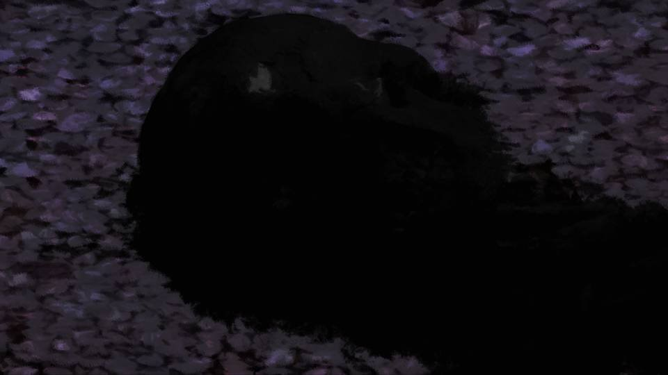
"Everyone here has breathed in spores from the air at some point.
If altered spores were scattered, anyone not infected with Droga would die in moments.
And touch the petals, and the body melts away bit by bit and is absorbed as the Goddess's nourishment."
"Now, you don't want that, do you?
Natsumi-chan, it all depends on your decision.
Become one with us, or everyone dies here.
Well? I don't think it's such a hard choice."
"Up to me... To save everyone..."
"Up to me... To save everyone..."
"Hey, Natsumi! Don't believe a word these guys say! It's all got to be garbage!"
"No, it's all true, actually..."
"I'd rather not do that if I can help it. I do dislike violence, and the Goddess wouldn't forgive killing people just to make them obey. So... Eiichiro, you brought it, didn't you?"
"Of course."
"I'd rather not do that if I can help it. I do dislike violence, and the Goddess wouldn't forgive killing people just to make them obey. So... Eiichiro, you brought it, didn't you?"
"Of course."
Ojisan pulled something like a large doll out of the deep drifts of cherry petals.
For its size, he lifted it with strange ease.
Ojisan's superhuman strength, or was it light to begin with―
For its size, he lifted it with strange ease.
Ojisan's superhuman strength, or was it light to begin with―
"What is that..."
"K-Kogori-senpai! Hold your breath!"
Goto suddenly clamped her hands over my nose and mouth.
"K-Kogori-senpai! Hold your breath!"
Goto suddenly clamped her hands over my nose and mouth.
"That won't do any good. It infects not just through breathing, but through the eyes or even the skin."
"Now―Tomi, who became the great sacrifice― worship Verde. She is the Goddess's magnificent slave."
What is this, what's going on!?
What is that mummy supposed to be...!?
"Now―Tomi, who became the great sacrifice― worship Verde. She is the Goddess's magnificent slave."
What is this, what's going on!?
What is that mummy supposed to be...!?
"Senpai, get away from here, now! If you touch the spores coming off that mummy, you'll end up like Chiga-nee too...!"
What's all this about spores and mummies...!
Told that out of nowhere, I can't keep up.
At the very least, I understood that I'd end up like Chiga-nee.
What's all this about spores and mummies...!
Told that out of nowhere, I can't keep up.
At the very least, I understood that I'd end up like Chiga-nee.
"Uncle, you're too soft. Lend me the mummy."

Chiga-nee half wrested the mummy from Ojisan and started walking toward us.
"Senpai! Close your eyes! Hold your breath!"
Goto covered my whole face, but the shock of it sent me into a panic, and my breathing only grew rougher.
My lungs took in a great deal of air, and that made my heart race all the more.
"Senpai! Close your eyes! Hold your breath!"
Goto covered my whole face, but the shock of it sent me into a panic, and my breathing only grew rougher.
My lungs took in a great deal of air, and that made my heart race all the more.
"Now, Natsumi-chan..."
Is this... the end...!?
Is this... the end...!?
Then, suddenly, I heard the sound of Chiga-nee running off into the distance.
And from a little way off, the sound of a splash―
What? What happened...?
And from a little way off, the sound of a splash―
What? What happened...?
"Ch-Chigaya! What are you doing!?"
"Now the spores won't scatter!"
The two corpses, flustered.
Where they were looking lay the hot-water stream.
"Now the spores won't scatter!"
The two corpses, flustered.
Where they were looking lay the hot-water stream.

"Hah... hah..."
Soaked from head to foot, Chiga-nee came out of the hot spring.
The mummy, bobbing on the water, was carried farther and farther off.
Chiga-nee seemed to have jumped into the water, mummy and all.
Soaked from head to foot, Chiga-nee came out of the hot spring.
The mummy, bobbing on the water, was carried farther and farther off.
Chiga-nee seemed to have jumped into the water, mummy and all.
"Mm... I won't...
I won't just keep taking it forever...!"
"Sis..."
"Chiga-nee, don't tell me...!"

"Mm... You injected me with Droga?
So what? I haven't become Shigatsu Youka's servant!"
"I cured her green eyes with falsificaso and made her first generation with Droga...
Don't tell me...
that brother of mine...!"
"Mm... You mean this?"

Chiga-nee pulled out a single soaked sheet of paper.

Chigaya, you were injected with Droga, but I've cured it with falsificaso.
You pretend you've surrendered to Shigatsu Youka, and when you see your chance, get rid of the Verde mummy.
Burn it, or soak it in water.
I'm counting on you.
Kotaro
You pretend you've surrendered to Shigatsu Youka, and when you see your chance, get rid of the Verde mummy.
Burn it, or soak it in water.
I'm counting on you.
Kotaro
"Mm... Dad hid down in that cave because he expected this would happen.
He said he was going around to thank people for putting out the fire."
"Then, Chiga-nee, all this time..."
"Mm... I'm sorry, Goto-chan. To get rid of the mummy, I had no choice but to put on this act. And Shigatsu Youka's weakness―"
"Then, Chiga-nee, all this time..."
"Mm... I'm sorry, Goto-chan. To get rid of the mummy, I had no choice but to put on this act. And Shigatsu Youka's weakness―"
Chiga-nee walked toward Kana-chan.
"Mm... Kana, hold out your arm."
At that, Chiga-nee slid the knife across Kana-chan's arm.
"Ow! What are you doing? Sis...!"
A thin film of Kana-chan's blood clung to the knife.
"Ow! What are you doing? Sis...!"
A thin film of Kana-chan's blood clung to the knife.
"Mm... Kana, watch closely."
Chiga-nee swung the knife out hard toward the two corpses.


"Aaaagh...!!"
"Ghhh... damn...!!"
"Ghhh... damn...!!"
The two who had been so full of swagger suddenly writhed in agony.
"Mm... This is Shigatsu Youka's weakness.
Get freshly shed third-generation blood on them, and you can damage them like this."
"I see. What Erika-chan said―I finally understand it.
'Only the green-eyed prevail. Those who have become green-eyed wither the bewitching flowers and return the dead to the underworld.'
To overcome that weakness, they need the four divine messengers.
Right now, by getting the blood on it, we can defeat Shigatsu Youka...!"
"Gh... we should kill them with the spores after all!"
"Hah, hah... yes... There's nothing else for it."
"Hah, hah... yes... There's nothing else for it."
―At that, a faint tremor came up through our feet.
"What―an earthquake!?"

"I told you killing is not allowed, did I not?"
"But, Goddess...!"
"If we don't kill them now, who knows what they'll do next...!"
"That is enough.
Eiichiro, Sakura. You two, stand back."
"G-Goddess...! You mustn't...!"
"Please, calm your anger...!"
The two, writhing and panicking, and an earthquake growing stronger still.
The two, writhing and panicking, and an earthquake growing stronger still.
"Ah! Gaaaaah...!!"
"Gwaaaah...!!"
"Gwaaaah...!!"
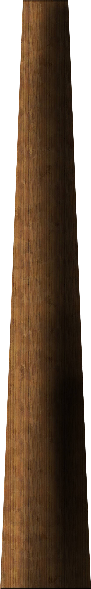
From the two bodies, something huge and brown suddenly burst out.
The earthquake grew stronger still.
The earthquake grew stronger still.
"Mm... Everyone, get down!"
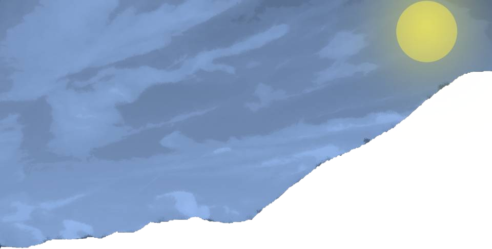
From every direction of the view before us, cherry trees stretching up to heaven one after another―
Their number was countless.
And not one was of any ordinary size.
Dozens of meters tall, the tallest on the scale of hundreds of meters.
Their number was countless.
And not one was of any ordinary size.
Dozens of meters tall, the tallest on the scale of hundreds of meters.
"What the hell is this...!"
"Everyone, hold hands!"
We held hands tight so as not to be swallowed by the shaking and the cherry trees shooting up.
The bright moonlight lost its light more and more.
No―the moon hadn't dimmed; a giant cherry tree had spread its branches above us and come into bloom.
"Everyone, hold hands!"
We held hands tight so as not to be swallowed by the shaking and the cherry trees shooting up.
The bright moonlight lost its light more and more.
No―the moon hadn't dimmed; a giant cherry tree had spread its branches above us and come into bloom.
 video: 桜山頂.wmv
video: 桜山頂.wmvHundreds of millions of petals dance over this Arata, a scene so vivid they seem to glow of themselves.
Like a cherry-blossom viewing held in hell.
Like a cherry-blossom viewing held in hell.
video: 桜山頂.wmv"Gh... Natsumi, you okay?"
"Yeah... Is Goto here?"
"Yeah... Is Goto here?"
video: 桜山頂.wmv
"I-I'm here..."
The three of us poked our faces out of the deep drifts of cherry petals.
"Mom! Where are you!?"
The three of us poked our faces out of the deep drifts of cherry petals.
"Mom! Where are you!?"
video: 桜山頂.wmv"H-here!"
A voice from above―
A voice from above―
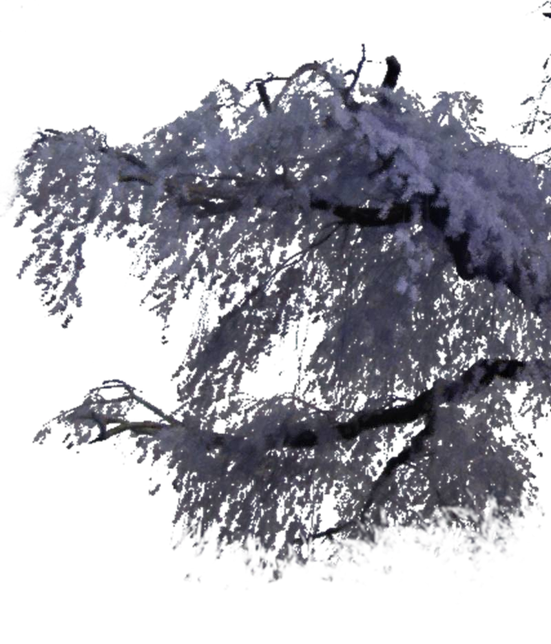
video: 桜山頂.wmvObasan, Chiga-nee and Kana-chan had caught on the branches of a tree.
video: 桜山頂.wmv―The three climbed down, crossing the giant branches.
 video: 桜山頂.wmv
video: 桜山頂.wmv"Kana-chan, is your foot okay? You twisted it earlier, didn't you?"
"Yeah, this much is fine. Running's a little hard, though... But still..."
"Yeah, this much is fine. Running's a little hard, though... But still..."
video: 桜山頂.wmv
Kana-chan looked up.
Following her, we looked around us.
Following her, we looked around us.
 video: 桜山頂.wmv
video: 桜山頂.wmvPerhaps because the giant cherry trees have covered this place, there is no wind to be felt at all.
Only the soft rustle of cherry petals piling up can be heard.
The scent of cherry blossoms, which you never notice normally―
A spring scent I've faintly smelled somewhere before.
Only the soft rustle of cherry petals piling up can be heard.
The scent of cherry blossoms, which you never notice normally―
A spring scent I've faintly smelled somewhere before.
video: 桜山頂.wmvAnd each and every petal gives off a jewel-like glow, like pink spinel.
The moonlight shouldn't reach here―is it moonlight reflected over and over from far away?
The faint light that reaches this far dimly lights this place, cut off by the cherry trees.
A scene as if a painter who loved the moon and flowers had poured his soul into it.
In this all-too-beautiful world, for a while I forget what is happening now.
The moonlight shouldn't reach here―is it moonlight reflected over and over from far away?
The faint light that reaches this far dimly lights this place, cut off by the cherry trees.
A scene as if a painter who loved the moon and flowers had poured his soul into it.
In this all-too-beautiful world, for a while I forget what is happening now.
video: 桜山頂.wmvNo―is this world really the living world we were in?
Did we die in that earthquake just now, and are we in the afterlife?
If anything, that feels more real.
The mountains of Arata, sunk to the bottom of a sea of cherry blossoms in an instant after a sudden earthquake.
No breath of life can be felt there.
Did we die in that earthquake just now, and are we in the afterlife?
If anything, that feels more real.
The mountains of Arata, sunk to the bottom of a sea of cherry blossoms in an instant after a sudden earthquake.
No breath of life can be felt there.
video: 桜山頂.wmv"Every one of these cherry trees is only a part of Shigatsu Youka.
The main body must still be somewhere else.
Most likely, to grow this many cherry trees, it drained all the nourishment from the land across Arata."
 video: 桜山頂.wmv
video: 桜山頂.wmvYes―this is a world laid waste, enough to be mistaken for the afterlife.
A world where neither animal cries nor the song of the wind resound at all.
A barren world, covered in this dizzying beauty.
A cruel world, born by feeding on the deaths of every living thing.
Where we are is― a world of death.
A world where neither animal cries nor the song of the wind resound at all.
A barren world, covered in this dizzying beauty.
A cruel world, born by feeding on the deaths of every living thing.
Where we are is― a world of death.
video: 桜山頂.wmv―!!
It's here.
Without a doubt, it's here.
Shigatsu Youka is here.
Right― beside us.
It's here.
Without a doubt, it's here.
Shigatsu Youka is here.
Right― beside us.
video: 桜山頂.wmv"Welcome, everyone. I have been waiting for you."
Right nearby, a young girl's voice.
Right nearby, a young girl's voice.
video: 桜山頂.wmv"Who's there!? Where are you?"
Then, soft rustling footsteps.
The sound of someone kicking through the piled cherry petals, coming toward us.
I turned that way, and...
Then, soft rustling footsteps.
The sound of someone kicking through the piled cherry petals, coming toward us.
I turned that way, and...
video: 桜山頂.wmv
"You're...
Shigatsu Youka...?"
video: 桜山頂.wmv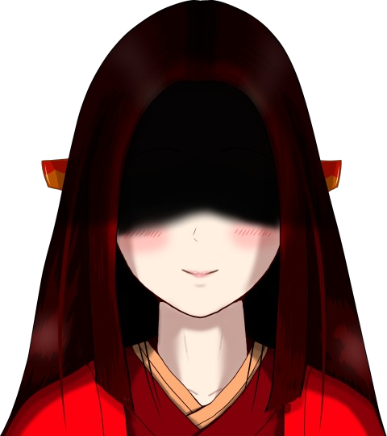
"Natsumi Kogori-san, how do you do.
My name...
video: 桜山頂.wmv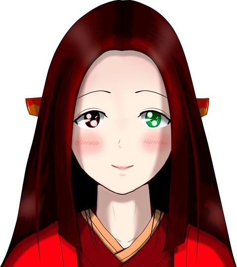
is Itohime."
Read ✓ Next in this arc →